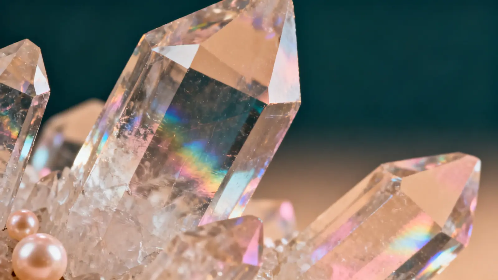
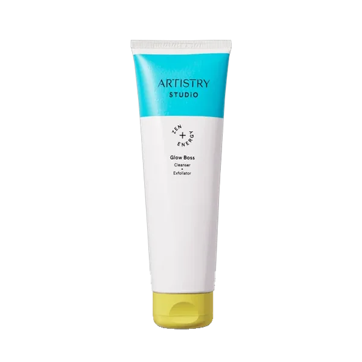
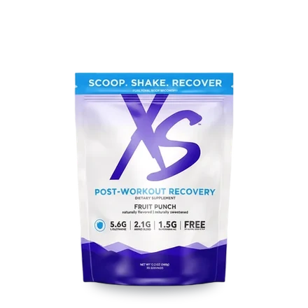
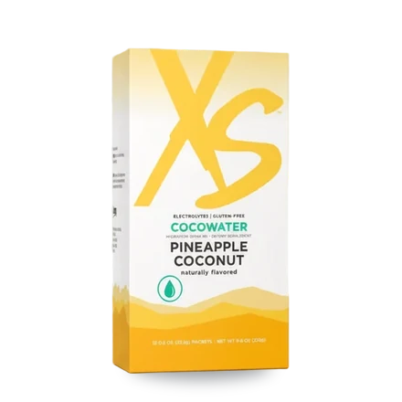
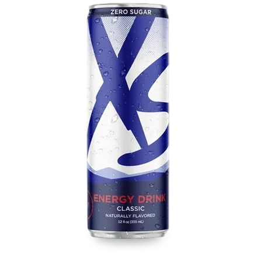
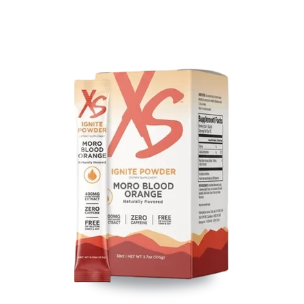

Everything in Skin Redefined

Skin Redefined
Artistry Skin Nutrition Renewing Softening Toner
Skincare · Toner
Buy on Amway (opens in a new tab)
Skin Redefined
Artistry Skin Nutrition Sleeping Mask
Skincare · Overnight mask
Buy on Amway (opens in a new tab)
Skin Redefined
Artistry Studio Glow Boss Cleanser + Exfoliator
Skincare · Cleanser + exfoliator
Buy on Amway (opens in a new tab)
Keep looking
- RecoveryWind down, repair and sleep

- HydrationElectrolytes and drink mixes for long, hot and sweaty sessions.

- Energy & FocusPre-workout, tablets and the full XS energy range.

- Protein Snack PackPowders, shakes, bars and crisps to hit your protein for the day.
- Fat LossThermogenic support to pair with your training.

- Daily FoundationsThe everyday base
Not sure where to start?
Three quick questions about how you train, then two suggestions with a line on why each one fits. No email or account needed.
Find what fits youQuestion 1 of 3